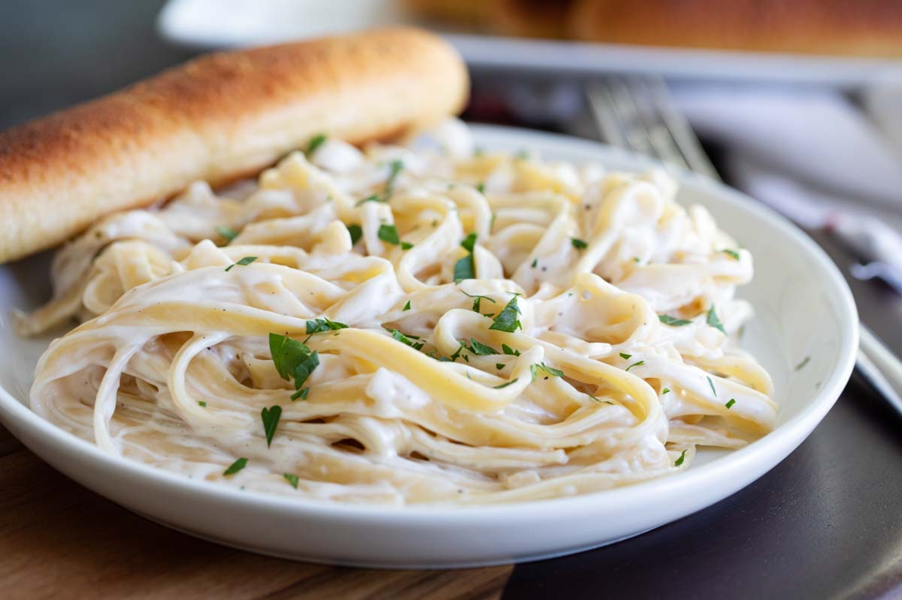

Pasta in Alfredo Sauce

Description
No one can resist a creamy, yummy and simple to make recipe of alfredo sauce paired with fettuccini. This homemade alfredo sauce is made with simple ingredients like -- butter, parmesan cheese, garlic, heavy cream, and salt.
Ingredients
- Butter: either salted or unsalted.
- Heavy whipping cream: for a more richer and creamy flavor.
- Cream cheese: this adds a nice consistency.
- Minced garlic: for best flavor, use fresh garlic and mince it the best you can.
- Garlic powder. adds to the rich garlic flavor.
- Italian seasoning: helps bring all the seasonigs together!
- Salt & pepper: just to taste.
- Grated parmesan cheese: it's always best to use grated parmesan cheese rather than powdered cheese.
Steps to follow
- Whisk dairy ingredients together: In a medium saucepan add butter, heavy whipping cream, and cream cheese. Cook over medium heat and whisk until melted.
- Add and whisk seasonings: Add the minced garlic, garlic powder, italian seasoning, salt and pepper. Continue to whisk until smooth.
- Stir in cheese: Add the grated parmesan cheese.
- Thicken your sauce: Bring to a simmer and continue to cook for about 3-5 minutes or until it starts to thicken.
- Toss with pasta: Toss it with your fettuccini pasta!